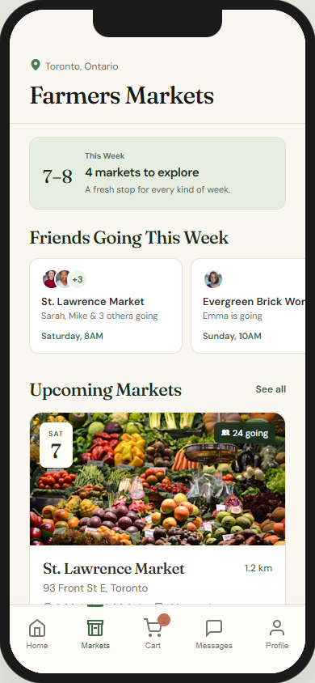
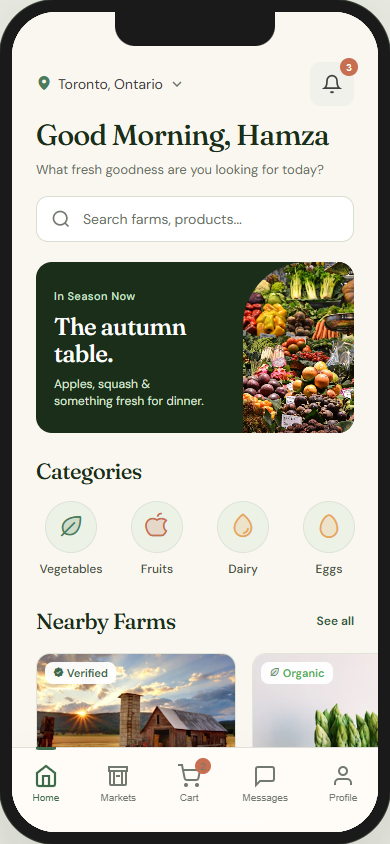
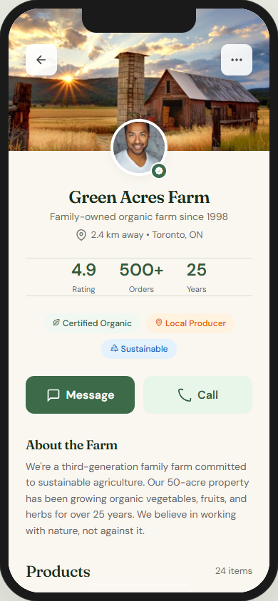
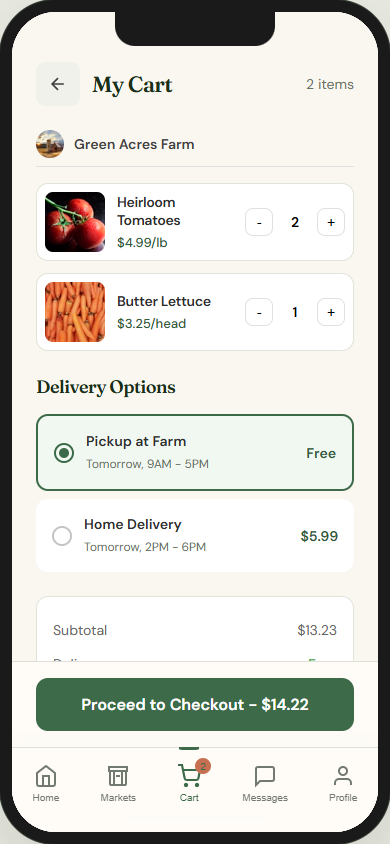

Remembering the right market
How can different schedules, locations, and vendor lineups become easy to scan in one place?
Make the next market visit easier to plan.
I designed a mobile app that helps people discover nearby farmers markets, see who is going, coordinate a visit, and keep track of the vendors they want to find again.
Help people understand what is nearby, who is selling and when a visit makes sense. I wanted local food discovery to lead to a concrete next step, while keeping planning and purchasing clear.
A listing might say
Neighbourhood Market, but I still need a day, opening hours and a place
before I can decide whether to go.
The experience needed to connect discovery with the social and practical details that turn an interesting listing into a real weekend plan.
Locavore brings market details and vendor context
together, then offers a concrete local action:
See who is going.
The mobile prototype brings together market schedules, attendance, vendors, products, messages, and a cart in one connected mobile experience.
Finding a market is only the beginning. I had to decide how discovery, commitment, and coordination should connect.
I used these questions to keep the interface focused on the moments before market day: choosing where to go, deciding to attend, and bringing other people into the plan.
How can different schedules, locations, and vendor lineups become easy to scan in one place?
How can one vendor profile connect products, market locations, and direct conversation?
How can “I’m Going,” friend activity, reminders, and messages work as one understandable planning flow?
Can someone move from finding a market to planning the visit with friends without switching between maps, calendars, and group chats?
The principles behind the mobile experience
Friend activity appears on market cards and detail screens, where it can help someone decide whether the visit fits their weekend.
The date, opening hours and location belong beside the market decision. A photograph alone cannot explain whether a visit fits.
Farm profiles give vendors a consistent home for their story, products, and weekly market schedule, so a good find is not lost after one visit.
The app and case study share Locavore colors, typography, date tabs, rounded cards, icon treatments, and a consistent action hierarchy.
Four moments where the mobile experience brings scattered planning tasks into one connected flow.
Search several sources
Markets organized by date
Repeated group texts
See who is going
Lose track of vendors
One vendor profile
Local choices feel abstract
Make progress visible
I used the prototype to connect the moments that usually happen across separate tools: discovery, coordination, vendor browsing, and shopping.
A broad local-food experience connecting several different intentions
Market information becomes more useful when it leads naturally into a plan
A mobile prototype spanning markets, vendors, products, messages, and checkout
I had to ask: What should happen after someone finds a market?
A selected state is not enough. The interface needs to explain how the person commits, coordinates, remembers, and reconnects with vendors afterward.
That distinction led to “See who is going,” a visible saved state and undo. I still need to observe whether people interpret those choices as intended.
I developed the concept from a directory into a connected mobile journey for discovering, planning, and returning to local markets.
I scoped this direction to the complete market-day journey. The question is what someone needs between discovering a market and deciding to visit.
The market screen places dates, locations and attendance controls together. The screen combines schedules, location, friend activity, vendor context, and a prominent attendance action.

A name alone does not tell me whether the trip fits my day
Dates, hours and place remain close to the market action
The people and goods behind a market can give the visit substance
Use profiles as context without presenting unverified badges as proof of trust
“Repeated group texts” can sound like more than a local interface state
“See who is going” describes the new local behavior; it does not reserve a place
Products and carts widen the scope beyond planning a market visit
Keep the original shopping exploration accessible without making it the main planning task
Impact cards translate repeat local actions into a simple personal progress view
The design explores markets attended, farmers supported, and seasonal purchasing as motivating feedback
Upcoming markets, date badges, locations, filters, and detailed market pages
The information architecture keeps the most time-sensitive details visible while people compare options.
Friend activity, “I’m Going,” reminders, invitations, and messages
Social tools stay attached to a specific market and date, so coordination retains its context.
Farm profiles, product browsing, a cart, delivery options, and direct communication
This layer helps people continue a relationship with a vendor before and after market day.
The mobile journey follows the natural rhythm of planning a market day:
The social action stays lightweight and reversible. The prototype demonstrates how market information, social context, and follow-up actions connect within one mobile experience.
A connected mobile flow across discovery, markets, vendors, products, messages, profile, cart, and checkout.
Browse upcoming markets with date, distance, time, vendor, and friend context.
See friend activity and mark attendance directly from a market card.
Review schedules, attendees, vendors, visit tips, reminders, and directions.
Connect a farm story with its products, trust details, and market presence.
Continue the conversation with farmers and coordinate with friends.
Browse products, adjust quantities, and move through a mobile cart and checkout flow.
The visual system uses warm editorial typography, earthy color, strong date markers, familiar mobile controls, and reusable cards across markets, vendors, products, messages, and profile screens.
The prototype connects the complete market-day journey:
Mobile-first continuity: Each screen keeps market, social, and vendor context close enough that the experience feels like one product rather than a collection of disconnected features.

Home screen: seasonal content, categories, nearby farms, products, and upcoming markets.

Farmer profile: story, products, trust details, and direct communication in one view.
| Feature | Experience area | Locavore |
|---|---|---|
| Main task | Upcoming markets and filters | Market cards and detail screens |
| Information | Friends and attendance | Friends and attendance, explicitly labeled |
| Saved state | Vendor continuity | Profiles, products, and weekly context |
| Shopping | Product browsing and cart | Quantity, pickup, delivery, and checkout |
| External actions | Messaging and reminders | Conversation and planning states |
| Measured outcomes | Future validation | Future validation |
The design system keeps a broad mobile experience coherent while the market-day journey remains easy to follow. The goal is a local marketplace that feels useful, social, and distinctly connected to place.
The concept connects several audiences and tasks. These were the main interaction problems I worked through.
Different locations, schedules, and vendor lineups can become difficult to compare at a glance.
DESIGN RESPONSE — Use calendar-style badges, weekly grouping, distance, hours, and vendor previews to surface what matters now.
Invitations and group messages can become disconnected from the market people are discussing.
NEW DIRECTION — Use “See who is going” and explain local storage. Test what participants believe happened after using it.
A good vendor discovery is easy to lose when the same farm appears at several markets.
DESIGN RESPONSE — Use one farmer profile for products, story, contact, and changing market locations.
Markets, commerce, messages, and impact can feel like separate products without a consistent hierarchy.
DESIGN RESPONSE — Reuse the same cards, badges, navigation, spacing, type, and action hierarchy across every screen.
These screens show how market discovery, vendor profiles, products, shopping, and community features connect in the mobile experience.
The farmer profile connects identity, products, trust details, and conversation.
The cart groups products by farm and keeps pickup, delivery, totals, and local impact together.

I would refine the transition between browsing a market, viewing a vendor, and building a basket so the shopping path stays connected to market-day intent.
I designed a cohesive mobile concept that carries people from market discovery into social planning, vendor exploration, shopping, messaging, and a personal local-food profile.
A complete mobile flow connects markets, vendors, products, messages, cart, checkout, and profile.
The browser prototype links the priority journeys and provides useful feedback for key actions.
Locavore uses one component language across the mobile app and the case-study presentation.
The strongest part of the concept is the connection between practical market information and the social energy of going with other people.
The biggest design lesson was to keep social features attached to a specific market, date, or vendor. Context makes coordination feel useful instead of becoming another generic social feed.
Open the mobile prototype and follow the full experience from market discovery to social planning, vendor browsing, messaging, and checkout.
Launch Mobile Prototype